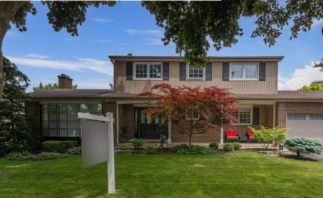
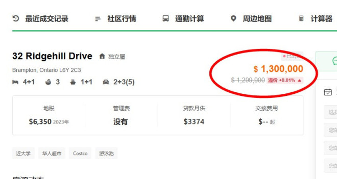
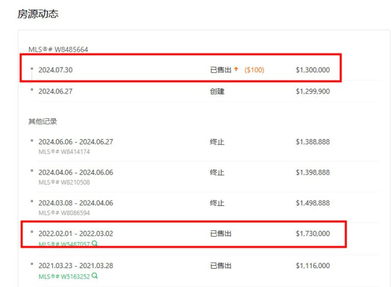
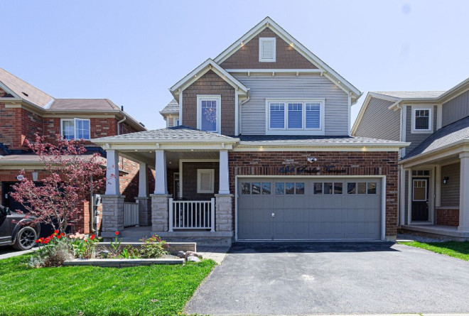
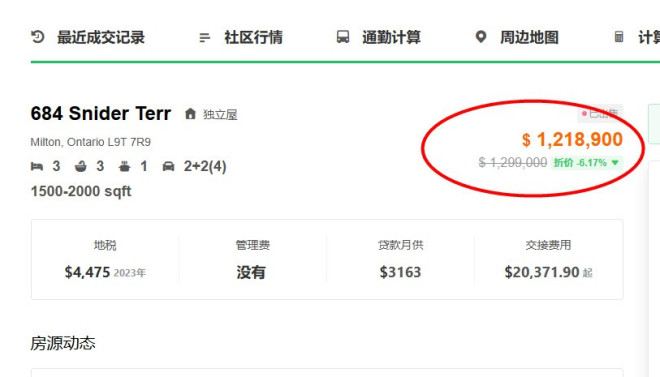
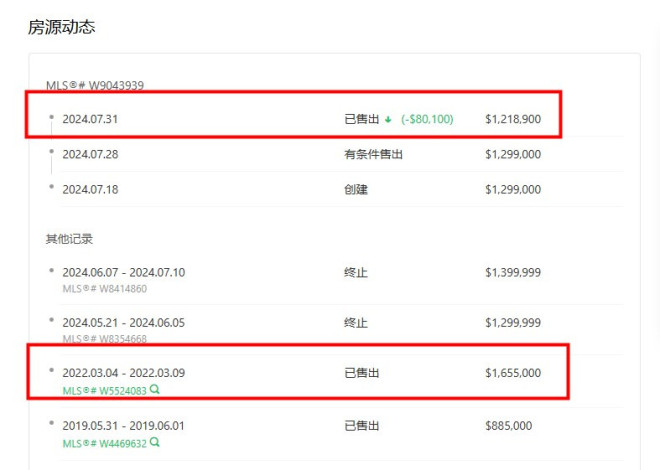

尽管上个月大多伦多地区的房屋销售量同比上升，但买家仍受益于房地产市场上更多的选择和平均房价的轻微缓解。

由于市场供应充足，许多房产以远低于原售价的价格售出，包括这座位于宾顿32 Ridgehill Drive的独立屋。
根据数据显示，这座四卧三浴的房屋拥有3100平方英尺的居住空间，配有加热泳池、咖啡屋、早餐吧、酒架、升级的硬木地板和翻新的浴室。
这栋独立屋在2022年2月首次以173万加元的价格售出，当时较低的借贷利率推动了房价飞涨以及整个GTA房地产市场的高需求。


两年后，这座房屋以不到150万加元的价格再次挂牌出售，这是首次尝试转售该房屋。在2024年4月，该房屋以不到140万加元的价格重新上市，6月再次以138.8万加元挂牌。
最终，这座房屋在2024年7月以130万加元售出，与两年半前的价格相比损失了43万加元。

今年夏天，这并不是GTA唯一一处血亏售出的房产。位于Milton 684 Snider Terr的这套独立屋有相同的命运。
根据数据显示，684 Snider Terr这套独立屋面积2000平方英尺，2022年3月市场最高峰时期买家以165.5万入手。2024年5月先后以139万和129万的价格上市，最终成交价为121.9万，净亏43.6万。


根据多伦多地产局（TRREB）周二发布的报告，2024年7月GTA的房屋销售量较2023年7月有所上升，但房价同比依旧下跌。
地产局称，大多伦多地区7月份售出5,391套房屋，比去年同期的5,220套增加了3.3%。经季节性调整，销售量比今年6月份下降了1.7%。新挂牌数量达到16,296，比去年增长了18.5%。
价格微降至1,106,617加元，下降了0.9%。
TRREB主席Jennifer Pearce表示，与去年相比，销售量的上升是令人鼓舞的，这可能是较低利率开始产生影响的迹象。
Pearce在周二的一份声明中说：我们可能开始看到6月和7月加拿大央行宣布的两次降息带来的积极影响。预计未来几个月借款成本将进一步下降。随着买家受益于较低的每月抵押贷款支付，预计销售将加速。